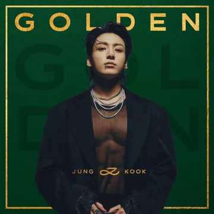

Nome verdadeiro: Jeon Jung-kook (전정국).
Cidade natal: Busan, Coreia do Sul.
Data de nascimento: 1 de setembro de 1997.
No BTS: vocalista, compositor, produtor e dançarino.
Como Jungkook, Cooky não fica longe da academia. Não deixe a aparência alegre do coelhinho rosa te enganar. Sempre cheio de coração e resistência sem limites, Cooky é aquele amigo com quem você sempre pode contar. No entanto, quando fica com raiva, imagina que se transforma em um enorme homem musculoso. Jungkook é conhecido por seus intermináveis treinos de ginástica para manter seu físico em boas condições. Quando fez seu primeiro desenho, Jungkook fez um coelho com um tanquinho.

Em 2011, Jungkook participou das audições do show de talentos Superstar K, e acabou não passando na primeira rodada de testes. Para sua surpresa, contudo, várias outras empresas tiveram acesso aos vídeos das audições, e ele acabou sendo um dos trainees mais visados. Na época, o jovem recebeu propostas de companhias como Cube Entertainment, JYP Entertainment, FNC Entertainment e Big Hit Entertainment, aceitando o contrato com a última.
No decorrer de sua trajetória no BTS, Jungkook se tornou uma das celebridades mais amadas da Coreia do Sul, e ganhou o inusitado apelido de "Rei do Esgotado". Isso porque qualquer item que ele usasse ou marca que elogiasse (ainda que sem a intenção de fazer publicidade) esgotavam rapidamente.
Na primeira sexta de novembro, Jungkook, do BTS, lançou “GOLDEN”, seu primeiro álbum solo. O disco conta com 11 faixas, incluindo os dois pré-lançamentos, “Seven” (feat. Latto) e “3D” (feat. Jack Harlow). Com a divulgação do álbum, os fãs puderam notar que todas as canções presentes no lançamento falavam sobre amor e relacionamentos, seja no sentido bom ou ruim. Em uma entrevista à Apple Music, o astro explicou sobre a forte presença da temática nas músicas.
Jungkook deixou claro ao entrevistador Zane Lowe, que nenhuma das faixas foram baseadas em alguma história pessoal dele, como muitos fãs suspeitavam. Ele ainda disse que o amor é um sentimento universal, e que queria expressar isso durante todo o álbum.
@Esthefani_moraes